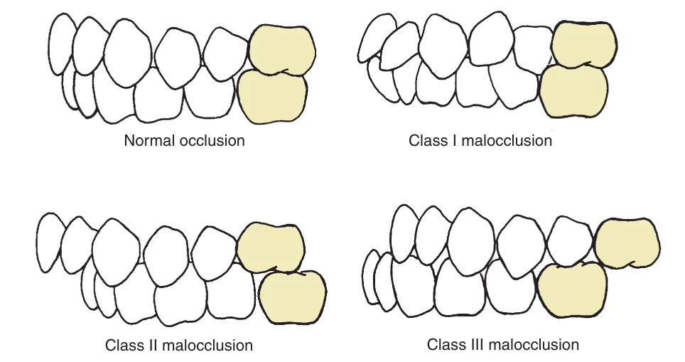

نسخه استخراجشده؛ ترجمه یا تأیید علمی انجام نشده است. وضعیت: captured
در ۱۸۹۹، ادوارد انگل فرض کرد مولر اول دائمی بالا ثابتترین نقطهی مرجع در جمجمه است و همه چیز را نسبت به آن سنجید.
معیار: کاسپ مزیوباکال مولر اول بالا کجای مولر اول پایین میافتد؟
چرا این ایده ۱۲۰ سال دوام آورد؟ چون سه ویژگی داشت که هر طبقهبندی موفقی دارد: ساده بود، تکرارپذیر بود، و با یک نگاه در معاینه قابل تعیین. هنوز هم سریعترین زبان مشترک میان دو درمانگر است.
اما همان فرض بنیادیاش — ثابت بودن مولر اول بالا — دقیقاً همانجایی است که سیستم میشکند. در اسلاید سوم به آن برمیگردیم.
| دیویژن ۱ | دیویژن ۲ | |
|---|---|---|
| انسیزورهای بالا | پروکلاین | رتروکلاین |
| اورجت | زیاد | کم یا طبیعی |
| اوربایت | متغیر | عمیق |
| لب پایین | پشت انسیزورها گیر میکند | معمولاً پرکار |
⚠️ نکتهای که در معاینه به کار میآید: در کلاس II دیویژن ۲، معمولاً لترالها پروکلایناند در حالی که مرکزیها رتروکلاین — و همین تابلوی مشخصهی آن است.
و یک تفاوت درمانی مهم: در دیویژن ۱ مشکل اصلی اورجت است و اغلب زمینهی اسکلتی دارد. در دیویژن ۲، اورجت طبیعی است ولی دیپبایت و تورک نادرست انسیزورها مسئلهاند. دیویژن ۲ اغلب الگوی صورتی هایپودایورجنت با عضلات قوی دارد که کنترل عمودی را دشوارتر میکند.

سابدیویژن یعنی رابطه تنها در یک سمت غیرطبیعی است — مثلاً «کلاس II سابدیویژن راست».
اما این سیستم سه ضعف بزرگ دارد:
ضعف سوم در عمل بیشتر از آنچه به نظر میرسد رخ میدهد. بیماری که مولر اول بالایش سالها پیش کشیده شده و مولر دوم به مزیال مهاجرت کرده، در معاینه «کلاس I» به نظر میرسد — در حالی که رابطهی اسکلتی و فضایی او هیچ شباهتی به کلاس I ندارد.
پس انگل را برای ارتباط سریع به کار ببر، نه بهعنوان تشخیص.
نوع سؤال: ساخت کلمه · 9 خانه
حروف منبع: ی · ا · ن · د · س · ژ · ی · و · ب